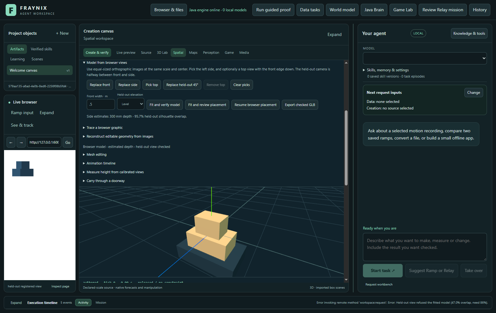
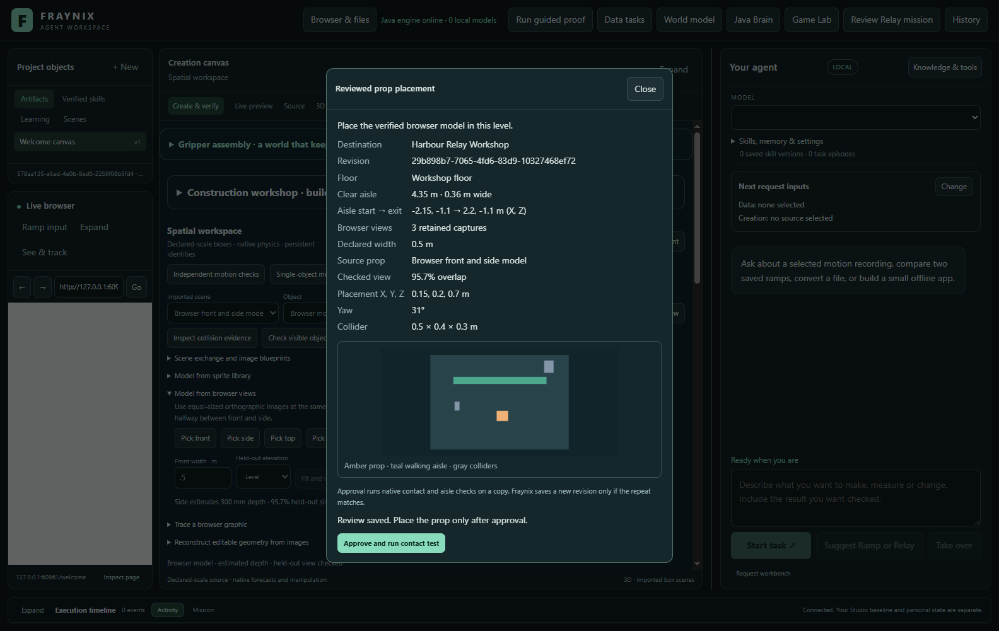
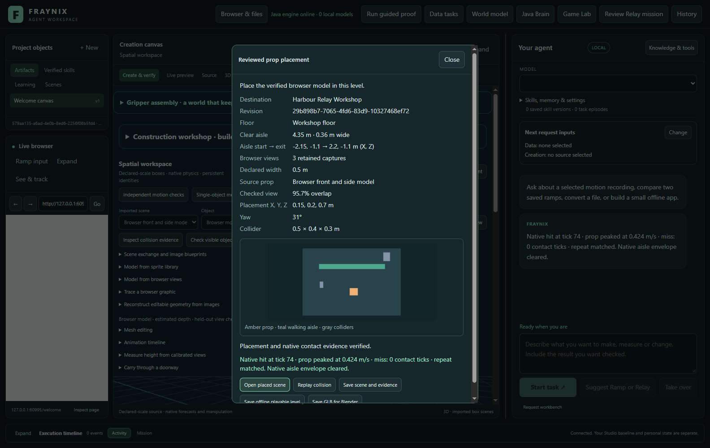
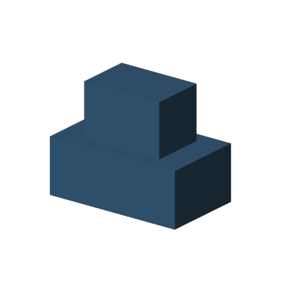
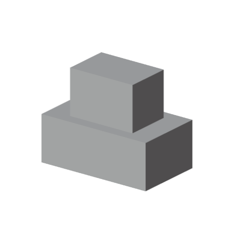

From a browser reference to a placed Blender scene
Use registered in-app browser captures to add an editable object to an existing level and verify the export in Blender.
The browser fit produced 656 triangles. Java verified a moving hit and a clear 4.35 m aisle. Blender reopened the export and measured 99.81% overlap from a fourth view.

Registered browser captures and fit result

The browser mesh is the source of the placement review

Native contact and clearance evidence after approval

Blender original at the independent fourth angle

Fraynix export at the same fourth angle
System files
Open source